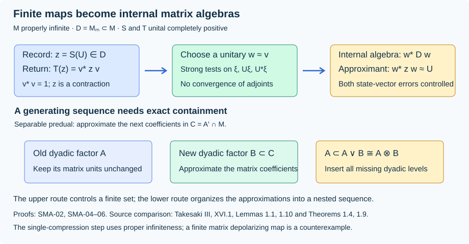
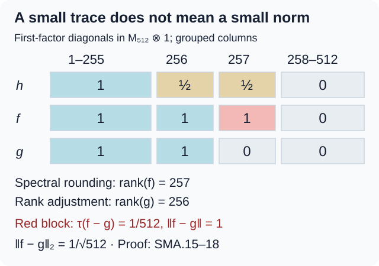

Strong approximation and matrix compressions
Original lesson by OpenAI Codex, GPT-6 Astra, Ultra. New text and figure: CC0.
A completely positive finite model gives operators in a matrix algebra, but its return map need not preserve products. In a properly infinite algebra, that map is a single compression. Strong approximation of the compressing isometry by unitaries then places a matrix algebra inside the original algebra. We prove this passage, including the distinction between strong and strong* convergence and the step that keeps successive matrix algebras nested.
Local AFD means approximation of any finite set in any sigma-strong* neighborhood by one finite-dimensional unital subalgebra. A separable algebra below has separable predual. For a normal state \(\varphi\), set
\[ \|x\|_\varphi^\#= \left(\frac{\varphi(x^*x)+\varphi(xx^*)}{2}\right)^{1/2}. \tag{SMA.1} \]We use the standard-form construction, spectral calculus, and injectivity retractions. The projection inputs are the proved Projections and types: projection Schröder–Bernstein, matrix coordinates (Proposition 8.4), the finite-part criterion, and proper halving and countable division (Proposition 13.4 and Corollary 13.5).
Membership detected by a faithful state
Let \(\varphi\) be faithful and let \(\xi=\xi_\varphi\) be its standard-form vector. A uniformly bounded family \(b_i\in M\) with \(b_i\xi\to0\) converges strongly to zero. Indeed \(\xi\) is separating. The projection onto \(\overline{M'\xi}\) belongs to \(M\); its complement annihilates \(\xi\), so it is zero. Thus \(M'\xi\) is dense, and
\[ b_i a'\xi=a'b_i\xi\longrightarrow0\qquad(a'\in M'). \]The common operator bound extends this convergence to every vector. Applying this to both \(b_i\) and \(b_i^*\) proves that (SMA.1) determines strong* convergence on bounded sets. Strong convergence of bounded operators also implies sigma-strong convergence: for a square-summable sequence of test vectors, split its squared-norm sum into a finite part and a uniformly small tail. These facts work for nets as well as sequences.
Membership lemma. If \(N\subset M\) is a von Neumann subalgebra, \(x\in M\), and \(x_n\in N\) satisfy \(\|x_n-x\|_\varphi^\#\to0\), then \(x\in N\). No common operator bound on the \(x_n\)'s is needed.
First suppose that the units agree. Real and imaginary parts reduce to self-adjoint \(x_n,x\). Put \(\eta=(x+i)\xi\). It is separating: \(a\eta=0\) implies \(a(x+i)=0\), hence \(a=0\). The resolvent identity gives
\[ \big((x_n+i)^{-1}-(x+i)^{-1}\big)\eta =(x_n+i)^{-1}(x-x_n)\xi\longrightarrow0. \tag{SMA.2} \]Both resolvents have norm at most one. The preceding density argument, now with \(\eta\), makes their difference converge strongly. Hence \((x+i)^{-1}\in N\). A unital C*-subalgebra is inverse closed by continuous functional calculus, so \(x+i\in N\). Repeat for the other self-adjoint part.
If \(N\) has unit \(p<1\), then
\[ (1-p)x\xi=(1-p)x^*\xi=0, \]by the assumed two vector convergences. Separation gives \((1-p)x=(1-p)x^*=0\), so \(x=pxp\). For \(p\ne0\), apply the unital argument inside \(pMp\) with \(\varphi(p\,\cdot\,p)/\varphi(p)\); for \(p=0\), \(x=0\). This proves the general assertion.
This is a membership conclusion. An unbounded sequence converging in (SMA.1) need not converge strongly on every vector.
The strong closure of the unitaries
Theorem. In any von Neumann algebra, the sigma-strong closure of the unitary group is the set of isometries.
A strong limit \(v\) of unitaries preserves every vector norm, so \(v^*v=1\). Conversely let \(v^*v=1\), and define
\[ e=1-vv^*,\qquad e_j=v^{j-1}e(v^*)^{j-1},\qquad f=1-\sum_{j\ge1}e_j. \]The \(e_j\)'s are orthogonal because \(ev=0\). Also \(ve_jv^*=e_{j+1}\), and
\[ vfv^*=vv^*-\sum_{j\ge2}e_j=f,\qquad v^*fv=f. \]Thus \(vf=fv\) is unitary in \(fMf\). Close the first \(n+1\) wandering levels into a cycle:
\[ w_n=v\sum_{j=1}^{n}e_j+(v^*)^ne_{n+1} +\sum_{j\ge n+2}e_j+vf. \tag{SMA.3} \]The summands have orthogonal initial and final projections, each family summing to one. Hence \(w_n\) is unitary. It agrees with \(v\) on \(f+\sum_{j\le n}e_j\), so
\[ \|(w_n-v)\zeta\| \le2\left\|\sum_{j\ge n+1}e_j\zeta\right\|\longrightarrow0. \tag{SMA.4} \]The uniform bound and the square-summable-tail argument give sigma-strong convergence. If \(e=0\), the constant sequence \(w_n=v\) works.
No assertion about \(w_n^*\to v^*\) was used. For the unilateral shift \(v\) on \(\ell^2(\mathbb N_0)\), (SMA.3) cycles the first \(n+1\) basis vectors. Its adjoint sends the first vector to the last vector of that cycle, whereas \(v^*\) sends it to zero. Thus strong* convergence fails.
Small defects with large algebraic size
Lemma. In a properly infinite algebra there are isometries \(u_n\to1\) sigma-strong* with \(1-u_nu_n^*\sim1\).
The projection division theorem gives \(1=\sum_{j\ge1}p_j\), with orthogonal \(p_j\sim1\). For completeness, repeated halving first gives such a family with a possible residual \(r\). Absorb \(r\) into \(p_1\): since \(p_1\le p_1+r\le1\) and \(p_1\sim1\), projection Schröder–Bernstein gives \(p_1+r\sim1\).
Let \(r_n=\sum_{j\ge n}p_j\). Both \(r_n\) and \(r_n-p_n\) are equivalent to one, since each contains a copy of one and is below one. Choose \(a_n\) with initial projection \(r_n\) and final projection \(r_n-p_n\), and set \(u_n=1-r_n+a_n\). Then
\[ \begin{gathered} u_n^*u_n=1,\qquad1-u_nu_n^*=p_n\sim1,\\ \|(1-u_n)\zeta\|,\ \|(1-u_n^*)\zeta\| \le2\|r_n\zeta\|,\qquad \|p_n\zeta\|\le\|r_n\zeta\|. \end{gathered} \tag{SMA.5} \]Both differences are supported on \(r_n\), which decreases strongly to zero. The estimates prove the lemma, simultaneously for any prescribed finite collection of vectors, and in countable amplifications. Neither a faithful state nor separability is needed.
Dyadic replacement. If a properly infinite algebra is locally AFD, every finite set can be approximated by a unital \(M_{2^k}\) subfactor, with \(k\) arbitrarily large.
To prove this, first approximate the set in a finite-dimensional unital algebra \(D\), with block matrix units \(e_{ij}^{(a)}\) and block sizes \(d_a\). Put \(t=\sum_a d_a\). Choose \(u=u_n\) from (SMA.5), and \(q=1-uu^*\). For each fixed \(z\in D\), \(uzu^*\to z\) sigma-strong*. Take \(2^k>t\), divide \(q\sim1\) into \(2^k\) projections equivalent to one, and organize the first \(t\) into block systems \(g_{ij}^{(a)}\) matching those of \(D\).
If \(z=\sum\lambda_{ij}^{(a)}e_{ij}^{(a)}\), put
\[ \rho(z)=\sum\lambda_{ij}^{(a)}g_{ij}^{(a)},\qquad \widetilde z=uzu^*+\rho(z). \]The map \(\rho\) is a contractive *-homomorphism supported on \(q\); hence
\[ \rho(z)^*\rho(z),\ \rho(z)\rho(z)^* \le\|z\|^2q. \tag{SMA.6} \]Consequently its contribution tends to zero in the chosen strong* tests. The systems \(ue_{ij}^{(a)}u^*+g_{ij}^{(a)}\), together with the unused defect diagonals, have \(2^k\) diagonals summing to one, each equivalent to one. They extend to one full matrix system while retaining every prescribed block connection: choose a reference diagonal, connect it to the first diagonal in each block, then use the existing units to connect the other diagonals. Products of these connecting partial isometries give the full matrix units. Their span contains all the \(\widetilde z\)'s. Choosing the original approximation and the two new errors sufficiently small proves the assertion.
Making the matrix algebras increase
Theorem. For a properly infinite algebra with separable predual, the following are equivalent: local AFD; generation by an increasing sequence of finite-dimensional algebras; generation by an increasing sequence \(A_k\cong M_{2^k}\).
The third implies the second. Kaplansky density in the norm closure of an increasing algebraic union proves that the second implies the first.
For the remaining implication choose a faithful normal state \(\varphi\) and a sigma-strong* dense sequence \((x_j)\) in the unit ball. Such a sequence exists because the standard Hilbert space is separable; the bounded strong* topology embeds into a countable product of separable Hilbert spaces.
Suppose a dyadic subfactor \(A\cong M_d\) with units \(e_{ij}\) has been chosen. Matrix coordinates give
\[ M\cong M_d\bar\otimes e_{11}Me_{11},\qquad C=A'\cap M\cong e_{11}Me_{11}. \tag{SMA.7} \]The corner projection is properly infinite: a nonzero finite central cut of it would make the corresponding sum of \(d\) equivalent cuts finite, contradicting proper infiniteness of \(M\). Properly infinite projections absorb finitely many equivalent copies; as \(1=\sum_i e_{ii}\), this gives \(e_{11}\sim1\). Thus \(C\cong M\), so \(C\) is itself properly infinite and locally AFD.
Write each of the next finitely many \(x_j\)'s as
\[ x_j=\sum_{r,s=1}^{d}b_{rs}^{(j)}e_{rs},\qquad b_{rs}^{(j)}\in C. \]Multiplication by a fixed operator is sigma-strong* continuous: its defining vector tests become vector tests on that fixed operator and its adjoint. Section 03 therefore supplies a dyadic \(B\subset C\) approximating all these finitely many coefficients to whatever accuracy the reconstructed sums require. Then \(A\vee B\cong A\otimes B\) is a dyadic subfactor containing \(A\) exactly.
Inductively obtain nested \(N_n\), with elements approximating \(x_1,\ldots,x_n\) within \(1/n\) in (SMA.1). The reconstructed elements need not have a common norm bound. Section 01 nevertheless puts every \(x_j\) in \(P=(\bigcup_nN_n)''\). Density gives \(P=M\). Finally insert the missing \(M_2\) tensor levels between successive dyadic sizes and before the first size. This proves the theorem without an unsupported boundedness assertion about the reconstructed coefficients.
A completely positive map as one compression
Theorem. Let \(D\cong M_m\) be a unital subfactor of a von Neumann algebra \(M\). Every completely positive map \(T:D\to M\) has
\[ T(x)=\sum_{k,\ell=1}^{m}a_{k\ell}^*xa_{k\ell}. \tag{SMA.8} \]If \(M\) is properly infinite, there is one \(v\in M\) with \(T(x)=v^*xv\). If \(T\) is unital, \(v^*v=1\).
Let \(e_{ij}\) be the units of \(D\). The operator matrix \([e_{ij}]\) is positive: it is the Gram matrix \([e_{1i}^*e_{1j}]\). Complete positivity therefore gives \(C=[T(e_{ij})]\ge0\) in \(M_m(M)\). Write \(C=B^*B\), with \(B=C^{1/2}=[b_{ki}]\). Set
\[ a_{k\ell}=\sum_{i=1}^{m}e_{i\ell}b_{ki}. \]Matrix multiplication yields
\[ a_{k\ell}^*e_{ij}a_{k\ell} =b_{ki}^*e_{\ell\ell}b_{kj}. \]Summing first over \(\ell\), then over \(k\), gives \(T(e_{ij})\). Linearity proves (SMA.8).
For properly infinite \(M\), (SMA.7) and its projection argument make \(D'\cap M\) properly infinite. Choose \(m^2\) isometries \(s_{k\ell}\) in that commutant with orthogonal ranges. Put \(v=\sum s_{k\ell}a_{k\ell}\). The identities
\[ s_{k\ell}^*s_{rs}=\delta_{kr}\delta_{\ell s}1,\qquad s_{k\ell}x=xs_{k\ell}\quad(x\in D) \]give \(v^*xv=T(x)\). Evaluating at one proves the last assertion. Notice that normality of \(T\) is automatic on its finite-dimensional domain, but normality was not needed in this algebraic construction.
Turning finite maps into an internal algebra
The exact input is Averaging, crossed products and injectivity, Theorem 4.1 and Corollary 4.2: an arbitrary injective algebra admits normal unital completely positive maps \(S_i:M\to M_{m_i}\) and completely positive contractions \(T_i:M_{m_i}\to M\), with \(T_iS_i\to\operatorname{id}\) pointwise sigma-strong*. Its earlier proof uses the continuous core and the finite hypertrace argument, rather than the AFD conclusion being proved here.
The return maps can also be unital. For a state \(\omega_i\) on \(M_{m_i}\), replace \(T_i\) by
\[ \widetilde T_i(z)=T_i(z)+\omega_i(z)(1-T_i(1)). \tag{SMA.9} \]This is completely positive and unital. Since \(S_i(1)=1\), the positive contractions \(1-T_i(1)\) tend sigma-strong* to zero. The composite correction has scalar coefficient bounded by \(\|x\|\), so it preserves pointwise convergence.
Theorem. Every properly infinite injective von Neumann algebra is locally AFD, without a countability assumption. Under separable predual it has the dyadic presentation of Section 04.
Every operator is a linear combination of four unitaries: split it into self-adjoint parts, scale to contractions, and use \(h=(u+u^*)/2\) for \(u=h+i(1-h^2)^{1/2}\). Thus it suffices to approximate a finite unitary family. Finitely many normal positive functionals specifying a neighborhood are dominated by a scalar multiple of their normalized sum, so fix one normal state \(\varphi\), not necessarily faithful.
Choose unital finite maps with
\[ \|TS(U_j)-U_j\|_\varphi^\#<\theta. \]Embed the middle algebra unitally as \(D\subset M\), possible by proper infiniteness. Section 05 writes \(T(z)=v^*zv\), with \(v\) an isometry. Put \(z_j=S(U_j)\); these are contractions. For the standard vector \(\xi_\varphi\), Cauchy–Schwarz gives
\[ \operatorname{Re}\langle vU_j\xi_\varphi,z_jv\xi_\varphi\rangle >1-\sqrt2\,\theta. \tag{SMA.10} \]Indeed the difference from one has modulus at most \(\|(v^*z_jv-U_j)\xi_\varphi\|<\sqrt2\theta\). The same holds for \(U_j^*,z_j^*\). By Section 02 choose a unitary \(w\) close to \(v\) strongly on \(\xi_\varphi,U_j\xi_\varphi,U_j^*\xi_\varphi\). The two real-part bounds then exceed \(1-(\sqrt2+1)\theta\). The compared vectors have norms at most one, and hence
\[ \|w^*z_jw-U_j\|_\varphi^\# <\sqrt{2(\sqrt2+1)\theta}. \tag{SMA.11} \]These approximants lie in the actual finite-dimensional subfactor \(w^*Dw\). Taking \(\theta\) small proves local AFD. Only strong approximation of \(v\), on the indicated vectors, enters this argument. Apply Section 04 when the predual is separable.

The finite center and the converse
The finite type II case needs central dimensions, rather than the proper infiniteness used above. The earlier lesson Central traces and AFD finite algebras supplies the complete proofs of the following two inputs. Work with the center-valued trace \(T_M\) and a faithful tracial state \(\tau=\rho T_M\).
A finite-dimensional algebra with a smaller identity is handled by adjoining the ambient identity before applying the first input.
First, Lemmas 1.1–1.2 prove central projection cuts and uniform finite-algebra approximation: for finite-dimensional \(D\), there are a dyadic factor \(Q\) and a finite central partition \((z_\ell)\) with
\[ \|x-E_{\sum Qz_\ell}(x)\|_2\le\eta\|x\|\quad(x\in D). \tag{SMA.12} \]Second, Lemma 2.1 proves exact retention: if \(M\) is locally AFD, \(A\cong M_{2^n}\) is fixed and \(V\) is finite dimensional, there are a larger dyadic \(B\supset A\) and a finite central partition with the same estimate on \(V\).
Here is the quantitative mechanism in those proofs. For a matrix block with first diagonal \(e\), round the central function \(t=T_M(e)\) downward to \(\alpha=N^{-1}\lfloor Nt\rfloor\), \(N=2^p\). The central cut lemma produces \(g\le e\) with \(T_M(g)=\alpha\). Transporting \(g\) through the block yields
\[ \|e_{ij}-e_{i1}ge_{1j}\|_2^2 =\rho(t-\alpha)<N^{-1}. \tag{SMA.13} \]Joint level sets of the finitely many integer functions \(\lfloor Nt\rfloor\) give the central partition. Split each retained diagonal and the complement into pieces of central dimension \(z_\ell/N\), complete the compatible matrix units, and sum them across the central parts. This yields one global dyadic factor and (SMA.12), with an explicit error of at most \((\sum_a d_a^2)N^{-1/2}\|x\|\).
For exact retention the earlier proof approximates the coefficient space \(\mathbb Ce_{11}+\sum e_{1i}Ve_{j1}\), rounds the expected first projection, and adjusts its rank separately on each central part to \(1/2^n\). Equal center-valued trace permits a small unitary to align that projection. A second unitary aligns all matrix units; it need not be small. The proof estimates errors on the first corner before reconstructing the original coefficients, and then takes a matrix factor in the relative commutant of the old factor. This proves exact containment and retains the varying central ranks. The full estimates and the complete alignment proof are in the named Lemma 2.1.
Finite central theorem. A locally AFD type \(\mathrm{II}_1\) algebra \(M\) with separable predual satisfies
\[ M\cong Z(M)\bar\otimes R,\qquad R=\bar\bigotimes_{j\ge1}(M_2,\operatorname{tr}_2). \tag{SMA.14} \]To see the conclusion from the proved inputs, use exact retention on successive finite initial segments of a dense sequence, obtaining nested dyadic factors \(A_n\). Let \(Z_n\) be the finite central algebra generated by all partitions so far and the first \(n\) projections in a countable generating family of the center. Then \(D_n=A_nZ_n\) increase and generate \(M\). Their trace-preserving expectations give bounded approximants.
Set \(R_0=(\bigcup A_n)''\). It has a unique normalized normal trace, since all such traces agree on each full matrix stage. Its center is scalar: otherwise two distinct normal states on that center, composed with its center-valued trace, would produce two different normal traces. Its unbounded matrix sizes exclude a finite-dimensional factor. Inserting missing dyadic levels identifies \(R_0\) with \(R\), by the trace-GNS construction in the earlier Theorem 3.1.
For \(z\in Z(M)_+\) with \(\tau(z)>0\), uniqueness applied to \(\tau(z\,\cdot)/\tau(z)\) on \(R_0\) gives \(\tau(zx)=\tau(z)\tau(x)\). Linearity extends this to all \(z\). Multiplication \(Z(M)\odot R_0\to M\) therefore preserves the product trace inner product, has dense range in \(L^2(M,\tau)\), and extends to a unitary intertwining both left actions. This proves (SMA.14).
Finally, every locally AFD algebra is injective by Finite approximation gives injectivity. That complete proof uses the explicit finite matrix average onto commutants and standard-form conjugation, and needs no separability. Thus the source's AFD-to-injectivity converse is already available in stronger generality.
Checks and complete source correspondence
A square root is required. In a unital \(M_{32}\) inside \(R\), let \(e\) be a minimal projection, so \(\tau(e)=1/32\). With grid size \(N=16\), downward rounding gives \(\lfloor N\tau(e)\rfloor=0\). The resulting cut is zero and its \(2\)-norm error is \(1/\sqrt{32}\). Although \(1/10>1/16\), this error exceeds \(1/10\). Thus choosing \(N^{-1}<\delta\) is insufficient for the norm tolerance in the source's Lemma 1.6 proof. Formula (SMA.13) requires \(N^{-1/2}<\delta\). The approximation theorem remains valid after this correction.
The finite obstruction to one compression. On \(M_m\), \(m>1\), the ucp map \(T(x)=\operatorname{tr}_m(x)1\) cannot be \(v^*xv\) for one \(v\in M_m\). Unitality would make \(v\) an isometry, hence a unitary in finite dimension. Unitary conjugation preserves the rank of a minimal projection, whereas \(T\) sends it to \(m^{-1}1\), of full rank. Proper infiniteness is essential to the single-compression assertion.
Rank correction and the trace \(2\)-norm. For comparable distinct projections \(f,g\), their difference, up to sign, is a nonzero projection. Consequently
\[ \begin{aligned} \|f-g\|&=1,\\ \|f-g\|_2^2&=\tau(|f-g|). \end{aligned} \tag{SMA.15} \]The first estimate displayed on p.212 in the source's proof of Lemma 1.7 omits the subscript \(2\). It must be read as a trace \(2\)-norm estimate. The following example realizes the obstruction inside the actual expectation and rank-adjustment construction.
In the tracial infinite product \(R\), take commuting unital matrix factors \(M_N\) and \(M_2\), with \(N=512\). Write \(E_{ij}\) for the first factor's matrix units and let \(q\) be a rank-one projection in the second. Set
\[ \begin{aligned} p&=\sum_{i=1}^{255}E_{ii},\\ a&=E_{256,256},\qquad b=E_{257,257},\\ e&=p\otimes1+(a+b)\otimes q. \end{aligned} \tag{SMA.16} \]The product trace gives \(\tau(e)=1/2\). Thus \(e\) and \(1-e\) are equivalent by finite projection comparison and are the diagonals of a unital \(M_2\) subfactor. Let \(P=M_N\otimes1\). Its trace-preserving expectation sends \(e\) to
\[ \begin{aligned} h&=\left(p+\tfrac12(a+b)\right)\otimes1,\\ \|h-e\|_2^2&=\frac{2}{N}\,\frac14\\ &=\frac1{1024}. \end{aligned} \tag{SMA.17} \]This is also uniform approximation with tolerance \(\delta=1/32\) on the unit ball of \(\mathbb Ce\), the coefficient space obtained by taking \(V=\{0\}\) in the retention lemma. Spectral rounding gives
\[ f=1_{[1/2,1]}(h)=(p+a+b)\otimes1. \]Its matrix rank is \(257\). The required rank is \(256\); take \(g=(p+a)\otimes1\). Then \(g\le f\), \(\tau(g)=\tau(e)=1/2\), and \(f-g=b\otimes1\). Therefore
\[ \begin{aligned} \|f-g\|_2&=\frac1{\sqrt{512}},\\ \|f-g\|&=1,\\ 2\delta^{1/4}&=2^{-1/4}<1. \end{aligned} \tag{SMA.18} \]Every comparable rank correction from \(257\) to \(256\) has the same operator-norm obstruction. Choosing the other threshold convention instead gives rank \(255\), with the same obstruction on enlargement. This changes neither the retention theorem nor its trace \(2\)-norm proof in Section 07; it identifies the norm in which that proof works.

The diagram records first-factor coefficients of \(h,f,g\); its column widths are schematic. The projection \(e\) in (SMA.16) also uses the second factor. The red block has trace \(1/512\) but operator norm one.
An unbounded approximating sequence. In \(L^\infty[0,1]\) with the integration state, \(x_n=n1_{[0,n^{-4}]}\) has \(\|x_n\|=n\) but \(\|x_n\|_\varphi^\#=1/n\). Moreover, for \(\zeta(t)=t^{-3/8}\in L^2[0,1]\),
\[ \|x_n\zeta\|_2^2 =n^2\int_0^{n^{-4}}t^{-3/4}\,dt=4n. \]Thus these approximants do not converge strongly to zero. The membership lemma is precisely what allows Section 04 to use them without claiming a stronger topology.
Source correspondence. Masamichi Takesaki, Theory of Operator Algebras III, Chapter XVI, §1, pp.206–215:
| Source item | Complete proof location and qualification |
|---|---|
| Lemma 1.1 | Section 02; arbitrary von Neumann algebra, sigma-strong closure, with the failure of adjoint convergence explicit. |
| Lemma 1.2 | Section 03; a sequence handles arbitrary finite vector tests, with no separability assumption. |
| Lemma 1.3 | Section 01; unbounded approximants are allowed, and smaller subalgebra units are included. |
| Theorem 1.4 | Sections 03–04; all three equivalences and every missing dyadic level are included. |
| Theorem 1.5 | Section 07 and the earlier central Theorem 3.1; the center and product trace are retained. |
| Lemma 1.6 | Section 07 and the earlier central Lemmas 1.1–1.2; all compatible submatrix refinements and central partitions are constructed, with corrected square-root tolerance. |
| Lemma 1.7 | The earlier central Lemma 2.1, described in Section 07; arbitrary finite-dimensional subspaces and exact retention of the old factor are included. |
| Corollary 1.8 | ICD-02, recalled in Section 07; its local-AFD hypothesis suffices without separability. |
| Lemma 1.10 | Section 05; \(m^2=\dim D\) coefficients in general, one compression in the properly infinite case. |
| Theorem 1.9, properly infinite proof | Section 06; the local conclusion extends to arbitrary predual, and Section 04 gives the separable sequential conclusion. |
The finite and general central cases of Theorem 1.9 are proved in the coupling lesson and The center and measurable matrix assembly through All types and the semifinite center. Its second finite-factor proof is SCP. This table distinguishes the properly infinite proof component from the full theorem.
The earlier properly infinite approximation lesson, Sections 1–4, was checked against the source and the direct arguments here. The source's use of an unproved common bound on reconstructed coefficients is unnecessary: the faithful-state membership lemma supplies the required conclusion. Recursive prerequisite verification and independent certification remain separate.